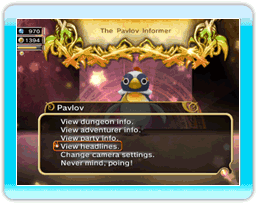

24
|
Altri elementi |
 |
Esistono tanti altri elementi che ti aiuteranno a gestire al meglio il tuo regno.
● Pavlov  È un irascibile pinguino che segue il re ovunque: ti fornirà informazioni sui dungeon, sui dati degli avventurieri, sulle novità che hanno luogo nel regno e tanto altro ancora! Pavlov ti permette anche di cambiare le impostazioni della telecamera selezionando "Change camera settings" nel suo menu. ● Chime's Tavern (Taverna di Chime)  Visita questo edificio per creare un tuo gruppo di avventurieri. Potrai anche controllare i progressi delle altre squadre di avventurieri in tempo reale. ● Mogiosh's Lookout Tower (Torre di guardia di Mogiosh)  Parla con Mogiosh all'entrata della torre di guardia per poter accedere alla vetta e avere una visuale completa del regno. Parla con Mogiosh all'entrata della torre di guardia per poter accedere alla vetta e avere una visuale completa del regno.Sappi che Mogiosh ha preziose informazioni sugli edifici e su tutto ciò che ha a che fare con il regno. Parlagli tutte le volte che hai bisogno di aiuto. |
 |
 |
 |